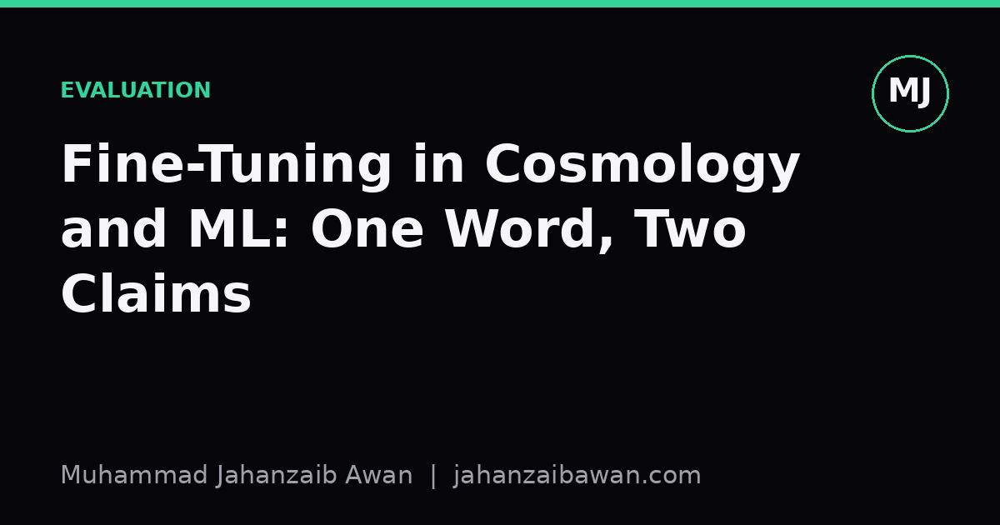

Fine-Tuning in Cosmology and ML: One Word, Two Claims
Cosmologists and machine learning engineers both talk about fine-tuning, but they are pointing at very different kinds of sensitivity. Conflating the two muddies both conversations.

Why the word trips people up
I have sat in seminar rooms where a physicist invokes the fine-tuning of fundamental constants, and I have sat in lab meetings where an engineer complains about fine-tuning a learning rate. Both use the same word. Both sound like they are describing a delicate, almost suspicious sensitivity in a system. It is tempting to treat these as two instances of the same underlying idea, perhaps even to borrow intuitions from one domain to shore up arguments in the other. I think that move is a mistake, and untangling why is a useful exercise in being precise about what a claim actually asserts.
In cosmology, the fine-tuning argument says that certain physical constants, things like the strength of gravity relative to electromagnetism, or the cosmological constant, sit within an extremely narrow range that permits stars, chemistry, and ultimately life to exist. Nudge them by a tiny fraction and you get a universe with no atoms heavier than hydrogen, or one that recollapses before anything interesting happens. The argument then asks: why this value, out of an apparently vast space of possible values, and various answers follow, from design to a multiverse to the claim that the space of possibilities is not what it seems.
In machine learning, fine-tuning hyperparameters means something almost mundane by comparison. You train a model, it performs poorly or well depending on the learning rate, batch size, weight decay, and so on, and you search that space, often with validation data, until you find a configuration that generalises well. Nobody treats a good learning rate as cosmically improbable. We treat it as an engineering fact: some settings work, others do not, and we have tools to find the working ones. The sensitivity is real, but the status of the observation is completely different.
What actually differs between the two claims
The first difference is about what explains the sensitivity. In ML, we know exactly why hyperparameters matter: they interact with the loss landscape, the optimiser dynamics, and the data distribution in ways we can study, visualise, and partially predict. A learning rate of 0.3 on an unnormalised dataset diverges because of concrete numerical mechanics, gradients overshoot, weights blow up, loss goes to infinity. There is no mystery here, just a model of the mechanism. In cosmology, by contrast, part of what makes the fine-tuning claim interesting is that we do not have an agreed mechanism explaining why the constants take the values they do. The sensitivity is not explained by a lower-level theory; it is, at least for now, a brute observation sitting on top of our best physics.
The second difference is about the reference class of alternatives. When I say a learning rate of 0.001 works and 0.3 does not, I am implicitly comparing against other learning rates I could have chosen and tested, all drawn from a space I can sample and probe experimentally. I can run a grid search over fifty values and plot validation loss as a function of learning rate, and see the curve. The cosmological argument, by contrast, compares our universe's constants against a hypothetical space of possible universes that we cannot sample, test, or even agree on how to put a probability measure over. Is a cosmological constant twice as large twice as likely, a priori? There is no experiment that tells you. This is the crux of a well known objection to the argument: without a principled way to assign probabilities across the space of possible constants, claims like 'the odds against this value are a billion to one' are much shakier than they sound.
The third difference concerns what the tuning is relative to. In ML, fine-tuning is relative to a loss function we chose and a task we defined, accuracy on held-out data, perplexity, F1, whatever it is. The 'good' region of hyperparameter space is good because it minimises something we explicitly specified. In cosmology, the sensitivity is relative to a specific outcome, the existence of stable stars and complex chemistry, that was not specified by any designer of the experiment, it is simply the condition under which observers like us exist to notice. That observational selection effect, the fact that any observers only ever find themselves in a universe compatible with observers, is itself a live part of the debate, and it has no real analogue in the ML case. Nobody worries that we only observe working learning rates because broken ones would have destroyed the observer; we observe broken ones all the time, we just call them a failed training run.
Where the analogy still earns its keep
None of this means the analogy is worthless. It is genuinely useful as a teaching device for one narrow idea: sensitivity to parameters is not by itself evidence of anything beyond the fact that the system has a narrow operating window. In ML this motivates practical humility, you should not trust a single run with one learning rate as evidence your architecture is sound, because you might have landed in a lucky but fragile region of configuration space. You want to show the result is robust to nearby settings, not just achievable at one exact point.
That same caution, reframed, is a fair challenge to bring back to the cosmological case: a narrow window by itself does not tell you whether you are looking at evidence for design, evidence for a multiverse, evidence of our own ignorance about the true space of possibilities, or nothing at all beyond the plain fact that life requires some conditions and not others. The ML case is useful precisely because it shows you a setting where fine sensitivity has a boring, well understood explanation, which should make you cautious about assuming any instance of sensitivity needs a dramatic one.
The practical lesson I take from putting these side by side is about labelling claims honestly. If you can specify a mechanism, sample the alternative space, and measure outcomes against a self-chosen target, call it engineering sensitivity and go find the robust region with proper validation. If you cannot do any of those three things, acknowledge that you are in a different and much harder epistemic situation, and resist borrowing the comfortable, well behaved intuitions from the engineering case to make the harder case sound more tractable than it is.